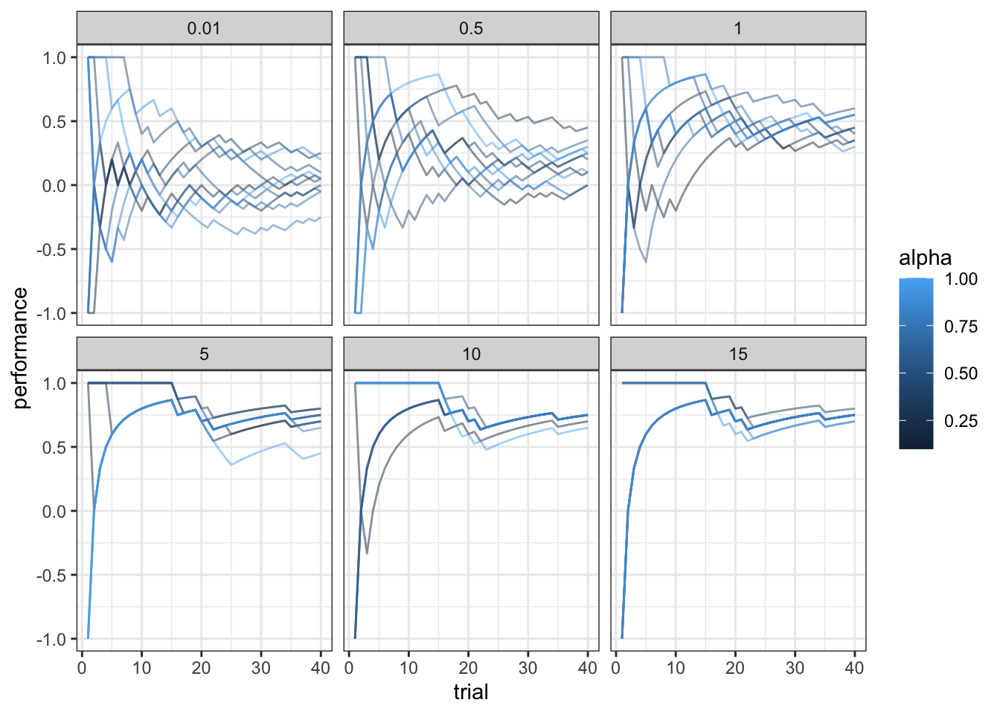
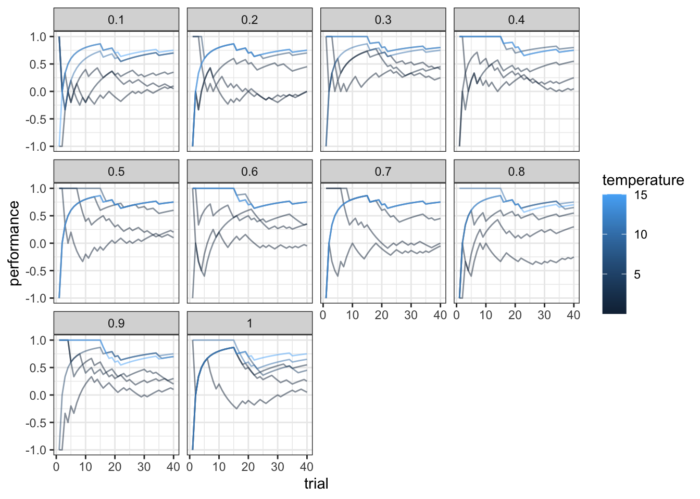
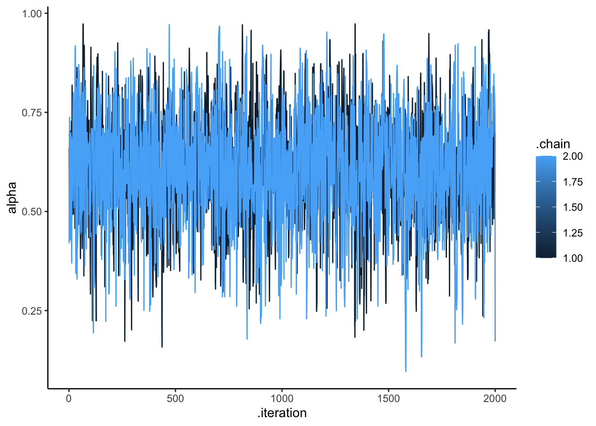
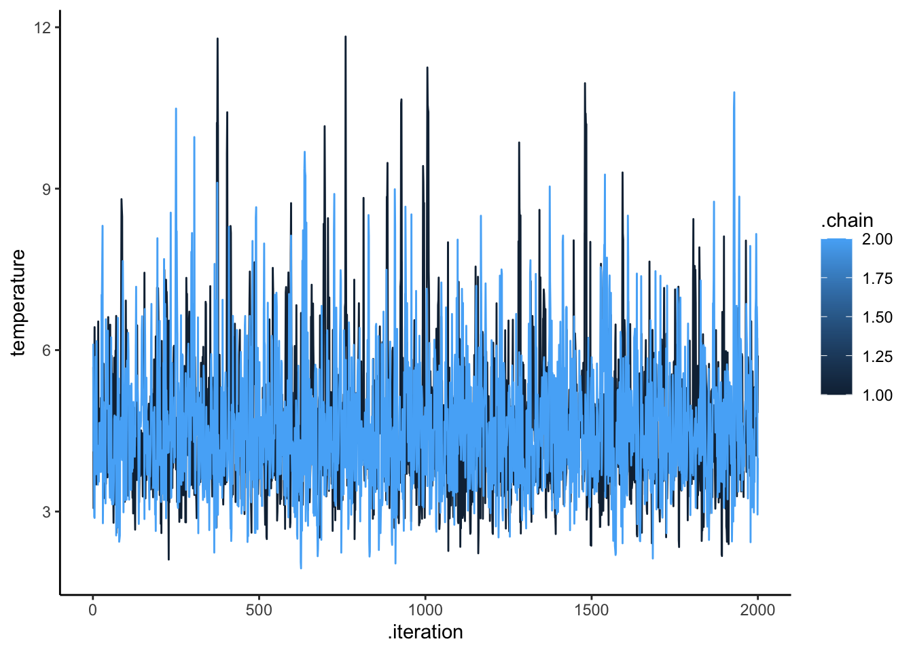
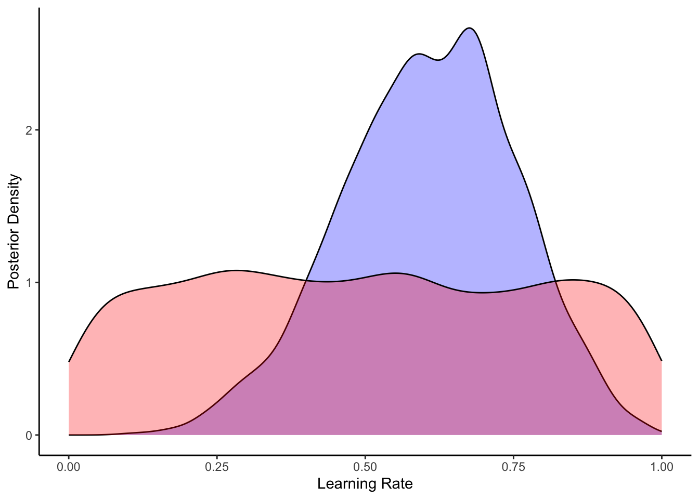
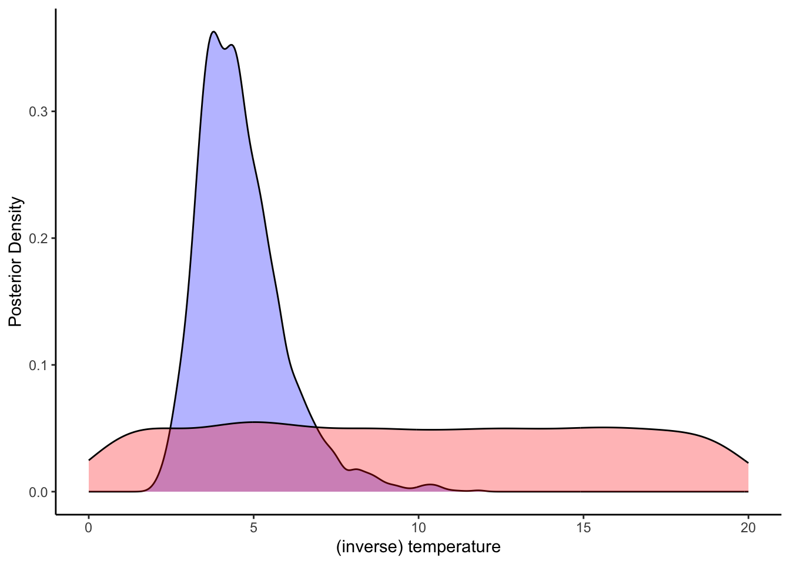

Chapter 11 Categorization models
In this module the course covers reinforcement learning. In particular, here we implement a version of the Rescorla-Wagner model. [Missing additional RL models]
softmax <- function(x, tau) {
outcome = 1 / (1 + exp(-tau * x))
return(outcome)
}
ValueUpdate = function(value, alpha, choice, feedback) {
PE <- feedback - value
v1 <- value[1] + alpha * (1 - choice) * (feedback - value[1])
v2 <- value[2] + alpha * (choice) * (feedback - value[2])
updatedValue <- c(v1, v2)
return(updatedValue)
}11.2 Simulating with alpha 0.9 and p 0.9
value <- c(0,0)
alpha <- 0.9
temperature <- 1
choice <- 0
feedback <- -1
p <- 0.9 # probability that choice 0 gives a prize (1-p is probability that choice 1 gives a prize)
ValueUpdate(value, alpha, choice, feedback)## [1] -0.9 0.0d <- tibble(trial = rep(NA, trials),
choice = rep(NA, trials),
value1 = rep(NA, trials),
value2 = rep(NA, trials),
feedback = rep(NA, trials))
Bot <- rbinom(trials, 1, p)
for (i in 1:trials) {
choice <- 1 #rbinom(1, 1, softmax(value[2] - value[1], temperature))
feedback <- ifelse(Bot[i] == choice, 1, -1)
value <- ValueUpdate(value, alpha, choice, feedback)
d$choice[i] <- choice
d$value1[i] <- value[1]
d$value2[i] <- value[2]
d$feedback[i] <- feedback
}
d <- d %>% mutate(
trial = seq(trials),
prevFeedback = lead(feedback))
ggplot(subset(d, trial < 21)) +
geom_line(aes(trial, value1), color = "green") +
geom_line(aes(trial, value2), color = "blue") +
geom_line(aes(trial, prevFeedback), color = "red") +
theme_bw()
11.3 Simulating with p = 0.75
# Let's imagine a situation where the underlying rate is 0.75
alpha <- 0.9
temperature <- 5
choice <- 0
feedback <- -1
p <- 0.75 # probability that choice 0 gives a prize (1-p is probability that choice 1 gives a prize)
df <- NULL
n <- 1
for (temperature in c(0.01, 0.5, 1, 5, 10, 15)) {
for (alpha in seq(0.1, 1, 0.1)) {
value <- c(0,0)
d <- tibble(trial = rep(NA, trials),
choice = rep(NA, trials),
value1 = rep(NA, trials),
value2 = rep(NA, trials),
feedback = rep(NA, trials),
alpha = rep(NA, trials),
temperature = rep(NA, trials),
agent = n)
for (i in 1:trials) {
choice <- rbinom(1, 1, softmax(value[2] - value[1], temperature))
feedback <- ifelse(Bot[i] == choice, 1, -1)
value <- ValueUpdate(value, alpha, choice, feedback)
d$trial[i] <- i
d$choice[i] <- choice
d$value1[i] <- value[1]
d$value2[i] <- value[2]
d$feedback[i] <- feedback
d$alpha[i] <- alpha
d$temperature[i] <- temperature
}
if (exists("df")) {df <- rbind(df, d)} else {df <- d}
n <- n + 1
}
}
df <- df %>% group_by(alpha, temperature) %>% mutate(
prevFeedback = lead(feedback))
d1 <- df %>% subset(trial < 21 & temperature == 0.01)
ggplot() +
geom_line(data = subset(d1, alpha == 1), aes(trial, prevFeedback), color = "red") +
geom_line(data = subset(d1, alpha == 0.9), aes(trial, value2), color = "purple") +
geom_line(data = subset(d1, alpha == 0.5), aes(trial, value2), color = "blue") +
geom_line(data = subset(d1, alpha == 0.2), aes(trial, value2), color = "green") +
theme_bw()
df <- df %>% group_by(alpha, temperature) %>% mutate(
rate = cumsum(choice) / seq_along(choice),
performance = cumsum(feedback) / seq_along(feedback)
)
ggplot(subset(df, trial < 41), aes(trial, performance, group = alpha, color = alpha)) +
geom_line(alpha = 0.5) +
facet_wrap(.~temperature) +
theme_bw()
ggplot(subset(df, trial < 41), aes(trial, performance, group = temperature, color = temperature)) +
geom_line(alpha = 0.5) +
facet_wrap(.~alpha) +
theme_bw()
11.4 What about asymmetric learning?
[Missing: simulations of RL with different alphas for positive and negative feedback]
11.5 Model fitting: symmetric RL
d <- df %>% subset(alpha == 0.6 & temperature == 5)
data <- list(
trials = trials,
choice = d$choice + 1,
feedback = d$feedback
)
stan_model <- "
data {
int<lower=1> trials;
array[trials] int<lower=1,upper=2> choice;
array[trials] int<lower=-1,upper=1> feedback;
}
transformed data {
vector[2] initValue; // initial values for V
initValue = rep_vector(0.0, 2);
}
parameters {
real<lower=0, upper=1> alpha; // learning rate
real<lower=0, upper=20> temperature; // softmax inv.temp.
}
model {
real pe;
vector[2] value;
vector[2] theta;
target += uniform_lpdf(alpha | 0, 1);
target += uniform_lpdf(temperature | 0, 20);
value = initValue;
for (t in 1:trials) {
theta = softmax( temperature * value); // action prob. computed via softmax
target += categorical_lpmf(choice[t] | theta);
pe = feedback[t] - value[choice[t]]; // compute pe for chosen value only
value[choice[t]] = value[choice[t]] + alpha * pe; // update chosen V
}
}
generated quantities{
real<lower=0, upper=1> alpha_prior;
real<lower=0, upper=20> temperature_prior;
real pe;
vector[2] value;
vector[2] theta;
real log_lik;
alpha_prior = uniform_rng(0,1);
temperature_prior = uniform_rng(0,20);
value = initValue;
log_lik = 0;
for (t in 1:trials) {
theta = softmax( temperature * value); // action prob. computed via softmax
log_lik = log_lik + categorical_lpmf(choice[t] | theta);
pe = feedback[t] - value[choice[t]]; // compute pe for chosen value only
value[choice[t]] = value[choice[t]] + alpha * pe; // update chosen V
}
}
"
write_stan_file(
stan_model,
dir = "stan/",
basename = "W11_RL_symmetric.stan")## [1] "/Users/au209589/Dropbox/Teaching/AdvancedCognitiveModeling23_book/stan/W11_RL_symmetric.stan"file <- file.path("stan/W11_RL_symmetric.stan")
mod <- cmdstan_model(file, cpp_options = list(stan_threads = TRUE),
stanc_options = list("O1"), pedantic = TRUE)
samples <- mod$sample(
data = data,
seed = 123,
chains = 2,
parallel_chains = 2,
threads_per_chain = 2,
iter_warmup = 2000,
iter_sampling = 2000,
refresh = 1000,
output_dir = "simmodels",
max_treedepth = 20,
adapt_delta = 0.99,
)## Running MCMC with 2 parallel chains, with 2 thread(s) per chain...
##
## Chain 1 Iteration: 1 / 4000 [ 0%] (Warmup)
## Chain 2 Iteration: 1 / 4000 [ 0%] (Warmup)
## Chain 1 Iteration: 1000 / 4000 [ 25%] (Warmup)
## Chain 2 Iteration: 1000 / 4000 [ 25%] (Warmup)
## Chain 1 Iteration: 2000 / 4000 [ 50%] (Warmup)
## Chain 1 Iteration: 2001 / 4000 [ 50%] (Sampling)
## Chain 2 Iteration: 2000 / 4000 [ 50%] (Warmup)
## Chain 2 Iteration: 2001 / 4000 [ 50%] (Sampling)
## Chain 1 Iteration: 3000 / 4000 [ 75%] (Sampling)
## Chain 2 Iteration: 3000 / 4000 [ 75%] (Sampling)
## Chain 1 Iteration: 4000 / 4000 [100%] (Sampling)
## Chain 1 finished in 1.9 seconds.
## Chain 2 Iteration: 4000 / 4000 [100%] (Sampling)
## Chain 2 finished in 1.9 seconds.
##
## Both chains finished successfully.
## Mean chain execution time: 1.9 seconds.
## Total execution time: 2.2 seconds.# Same the fitted model
samples$save_object("simmodels/W11_RL_symmetric.rds")
samples$cmdstan_diagnose()## Processing csv files: /Users/au209589/Dropbox/Teaching/AdvancedCognitiveModeling23_book/simmodels/W11_RL_symmetric-202402150732-1-8fd82a.csv, /Users/au209589/Dropbox/Teaching/AdvancedCognitiveModeling23_book/simmodels/W11_RL_symmetric-202402150732-2-8fd82a.csv
##
## Checking sampler transitions treedepth.
## Treedepth satisfactory for all transitions.
##
## Checking sampler transitions for divergences.
## No divergent transitions found.
##
## Checking E-BFMI - sampler transitions HMC potential energy.
## E-BFMI satisfactory.
##
## Effective sample size satisfactory.
##
## Split R-hat values satisfactory all parameters.
##
## Processing complete, no problems detected.## # A tibble: 11 × 10
## variable mean median sd mad q5 q95 rhat ess_bulk ess_tail
## <chr> <dbl> <dbl> <dbl> <dbl> <dbl> <dbl> <dbl> <dbl> <dbl>
## 1 lp__ -1.37e+1 -1.33e+1 1.15 0.749 -1.60e+1 -12.6 1.00 1409. 1628.
## 2 alpha 6.07e-1 6.13e-1 0.146 0.149 3.57e-1 0.840 1.00 2087. 1606.
## 3 temperat… 4.61e+0 4.40e+0 1.30 1.13 2.94e+0 7.03 1.00 1942. 1747.
## 4 alpha_pr… 4.99e-1 4.96e-1 0.286 0.364 5.24e-2 0.947 1.00 4069. 3923.
## 5 temperat… 9.86e+0 9.81e+0 5.73 7.34 1.07e+0 18.9 1.00 3739. 3853.
## 6 pe 4.68e-1 4.89e-1 0.0998 0.0910 2.69e-1 0.593 1.00 2088. 1606.
## 7 value[1] -9.13e-1 -9.42e-1 0.0901 0.0607 -9.96e-1 -0.734 1.00 2086. 1606.
## 8 value[2] 8.02e-1 8.11e-1 0.103 0.108 6.18e-1 0.957 1.00 2099. 1606.
## 9 theta[1] 4.69e-3 1.84e-3 0.00757 0.00251 2.38e-5 0.0193 1.00 1929. 1534.
## 10 theta[2] 9.95e-1 9.98e-1 0.00757 0.00251 9.81e-1 1.00 1.00 1937. 1555.
## 11 log_lik -1.03e+1 -1.00e+1 1.04 0.709 -1.25e+1 -9.38 1.00 1503. 1788.draws_df <- as_draws_df(samples$draws())
ggplot(draws_df, aes(.iteration, alpha, group = .chain, color = .chain)) +
geom_line() +
theme_classic()
ggplot(draws_df, aes(.iteration, temperature, group = .chain, color = .chain)) +
geom_line() +
theme_classic()
ggplot(draws_df) +
geom_density(aes(alpha), fill = "blue", alpha = 0.3) +
geom_density(aes(alpha_prior), fill = "red", alpha = 0.3) +
xlab("Learning Rate") +
ylab("Posterior Density") +
theme_classic()
ggplot(draws_df) +
geom_density(aes(temperature), fill = "blue", alpha = 0.3) +
geom_density(aes(temperature_prior), fill = "red", alpha = 0.3) +
xlab("(inverse) temperature") +
ylab("Posterior Density") +
theme_classic()
11.6 Model fitting: asymmetric RL
stan_model <- "
data {
int<lower=1> trials;
array[trials] int<lower=1,upper=2> choice;
array[trials] int<lower=-1,upper=1> feedback;
}
transformed data {
vector[2] initValue; // initial values for V
initValue = rep_vector(0.0, 2);
}
parameters {
real<lower=0, upper=1> alpha_pos; // learning rate
real<lower=0, upper=1> alpha_neg; // learning rate
real<lower=0, upper=20> temperature; // softmax inv.temp.
}
model {
real pe;
vector[2] value;
vector[2] theta;
target += uniform_lpdf(alpha_pos | 0, 1);
target += uniform_lpdf(alpha_neg | 0, 1);
target += uniform_lpdf(temperature | 0, 20);
value = initValue;
for (t in 1:trials) {
theta = softmax( temperature * value); // action prob. computed via softmax
target += categorical_lpmf(choice[t] | theta);
pe = feedback[t] - value[choice[t]]; // compute pe for chosen value only
if (pe < 0)
value[choice[t]] = value[choice[t]] + alpha_neg * pe; // update chosen V
if (pe > 0)
value[choice[t]] = value[choice[t]] + alpha_pos * pe; // update chosen V
}
}
"
write_stan_file(
stan_model,
dir = "stan/",
basename = "W11_RL_asymmetric.stan")## [1] "/Users/au209589/Dropbox/Teaching/AdvancedCognitiveModeling23_book/stan/W11_RL_asymmetric.stan"file <- file.path("stan/W11_RL_asymmetric.stan")
mod <- cmdstan_model(file, cpp_options = list(stan_threads = TRUE),
stanc_options = list("O1"), pedantic = TRUE)
samples <- mod$sample(
data = data,
seed = 123,
chains = 2,
parallel_chains = 2,
threads_per_chain = 2,
iter_warmup = 2000,
iter_sampling = 2000,
refresh = 1000,
output_dir = "simmodels",
max_treedepth = 20,
adapt_delta = 0.99,
)## Running MCMC with 2 parallel chains, with 2 thread(s) per chain...
##
## Chain 1 Iteration: 1 / 4000 [ 0%] (Warmup)
## Chain 2 Iteration: 1 / 4000 [ 0%] (Warmup)
## Chain 1 Iteration: 1000 / 4000 [ 25%] (Warmup)
## Chain 2 Iteration: 1000 / 4000 [ 25%] (Warmup)
## Chain 1 Iteration: 2000 / 4000 [ 50%] (Warmup)
## Chain 1 Iteration: 2001 / 4000 [ 50%] (Sampling)
## Chain 2 Iteration: 2000 / 4000 [ 50%] (Warmup)
## Chain 2 Iteration: 2001 / 4000 [ 50%] (Sampling)
## Chain 2 Iteration: 3000 / 4000 [ 75%] (Sampling)
## Chain 1 Iteration: 3000 / 4000 [ 75%] (Sampling)
## Chain 2 Iteration: 4000 / 4000 [100%] (Sampling)
## Chain 2 finished in 2.5 seconds.
## Chain 1 Iteration: 4000 / 4000 [100%] (Sampling)
## Chain 1 finished in 2.8 seconds.
##
## Both chains finished successfully.
## Mean chain execution time: 2.7 seconds.
## Total execution time: 2.9 seconds.11.7 Model fitting: multilevel
## Multilevel
agents <- 100
trials <- 120
df <- NULL
for (agent in 1:agents) {
temperature <- boot::inv.logit(rnorm(1, -2, 0.3))*20
alpha <- boot::inv.logit(rnorm(1, 1.1, 0.3))
value <- c(0,0)
d <- tibble(trial = rep(NA, trials),
choice = rep(NA, trials),
value1 = rep(NA, trials),
value2 = rep(NA, trials),
feedback = rep(NA, trials),
alpha = alpha,
temperature = temperature,
agent = agent)
for (i in 1:trials) {
choice <- rbinom(1, 1, softmax(value[2] - value[1], temperature))
feedback <- ifelse(Bot[i] == choice, 1, -1)
value <- ValueUpdate(value, alpha, choice, feedback)
d$trial[i] <- i
d$choice[i] <- choice
d$value1[i] <- value[1]
d$value2[i] <- value[2]
d$feedback[i] <- feedback
d$alpha[i] <- alpha
d$temperature[i] <- temperature
}
if (exists("df")) {df <- rbind(df, d)} else {df <- d}
}
df <- df %>% group_by(alpha, temperature) %>% mutate(
prevFeedback = lead(feedback))
## Create the data
trials <- trials
agents <- agents
d_choice <- df %>%
subset(select = c(agent, choice)) %>%
mutate(row = rep(seq(trials),agents)) %>%
pivot_wider(names_from = agent, values_from = choice)
d_feedback <- df %>%
subset(select = c(agent, feedback)) %>%
mutate(row = rep(seq(trials),agents)) %>%
pivot_wider(names_from = agent, values_from = feedback)
data <- list(
trials = trials,
agents = agents,
choice = as.matrix(d_choice[,2:(agents + 1)]),
feedback = as.matrix(d_feedback[,2:(agents + 1)])
)
data$choice <- data$choice + 1
stan_model <- "
data {
int<lower=1> trials;
int<lower=1> agents;
array[trials, agents] int<lower=1,upper=2> choice;
array[trials, agents] int<lower=-1,upper=1> feedback;
}
transformed data {
vector[2] initValue; // initial values for V
initValue = rep_vector(0.0, 2);
}
parameters {
real alphaM; // learning rate
real temperatureM; // softmax inv.temp.
vector<lower = 0>[2] tau;
matrix[2, agents] z_IDs;
cholesky_factor_corr[2] L_u;
}
transformed parameters {
matrix[agents,2] IDs;
IDs = (diag_pre_multiply(tau, L_u) * z_IDs)';
}
model {
real pe;
vector[2] value;
vector[2] theta;
target += normal_lpdf(alphaM | 0, 1);
target += normal_lpdf(temperatureM | 0, 1);
target += normal_lpdf(tau[1] | 0, .3) -
normal_lccdf(0 | 0, .3);
target += normal_lpdf(tau[2] | 0, .3) -
normal_lccdf(0 | 0, .3);
target += lkj_corr_cholesky_lpdf(L_u | 2);
target += std_normal_lpdf(to_vector(z_IDs));
for (agent in 1:agents){
value = initValue;
for (t in 1:trials) {
theta = softmax( inv_logit(temperatureM + IDs[agent,2]) * 20 * value); // action prob. computed via softmax
target += categorical_lpmf(choice[t, agent] | theta);
pe = feedback[t, agent] - value[choice[t, agent]]; // compute pe for chosen value only
value[choice[t, agent]] = value[choice[t, agent]] + inv_logit(alphaM + IDs[agent,1]) * pe; // update chosen V
}
}
}
"
write_stan_file(
stan_model,
dir = "stan/",
basename = "W11_RL_multilevel.stan")## [1] "/Users/au209589/Dropbox/Teaching/AdvancedCognitiveModeling23_book/stan/W11_RL_multilevel.stan"file <- file.path("stan/W11_RL_multilevel.stan")
mod <- cmdstan_model(file, cpp_options = list(stan_threads = TRUE),
stanc_options = list("O1"), pedantic = TRUE)
samples <- mod$sample(
data = data,
seed = 123,
chains = 2,
parallel_chains = 2,
threads_per_chain = 2,
iter_warmup = 2000,
iter_sampling = 2000,
refresh = 1000,
output_dir = "simmodels",
max_treedepth = 20,
adapt_delta = 0.99,
)## Running MCMC with 2 parallel chains, with 2 thread(s) per chain...
##
## Chain 1 Iteration: 1 / 4000 [ 0%] (Warmup)## Chain 1 Informational Message: The current Metropolis proposal is about to be rejected because of the following issue:## Chain 1 Exception: lkj_corr_cholesky_lpdf: Random variable[2] is 0, but must be positive! (in '/var/folders/lt/zspkqnxd5yg92kybm5f433_cfjr0d6/T/RtmpP3dlfk/model-47d0691c5d7c.stan', line 40, column 2 to column 44)## Chain 1 If this warning occurs sporadically, such as for highly constrained variable types like covariance matrices, then the sampler is fine,## Chain 1 but if this warning occurs often then your model may be either severely ill-conditioned or misspecified.## Chain 1## Chain 1 Informational Message: The current Metropolis proposal is about to be rejected because of the following issue:## Chain 1 Exception: lkj_corr_cholesky_lpdf: Random variable[2] is 0, but must be positive! (in '/var/folders/lt/zspkqnxd5yg92kybm5f433_cfjr0d6/T/RtmpP3dlfk/model-47d0691c5d7c.stan', line 40, column 2 to column 44)## Chain 1 If this warning occurs sporadically, such as for highly constrained variable types like covariance matrices, then the sampler is fine,## Chain 1 but if this warning occurs often then your model may be either severely ill-conditioned or misspecified.## Chain 1## Chain 1 Informational Message: The current Metropolis proposal is about to be rejected because of the following issue:## Chain 1 Exception: lkj_corr_cholesky_lpdf: Random variable[2] is 0, but must be positive! (in '/var/folders/lt/zspkqnxd5yg92kybm5f433_cfjr0d6/T/RtmpP3dlfk/model-47d0691c5d7c.stan', line 40, column 2 to column 44)## Chain 1 If this warning occurs sporadically, such as for highly constrained variable types like covariance matrices, then the sampler is fine,## Chain 1 but if this warning occurs often then your model may be either severely ill-conditioned or misspecified.## Chain 1## Chain 2 Iteration: 1 / 4000 [ 0%] (Warmup)## Chain 2 Informational Message: The current Metropolis proposal is about to be rejected because of the following issue:## Chain 2 Exception: lkj_corr_cholesky_lpdf: Random variable[2] is 0, but must be positive! (in '/var/folders/lt/zspkqnxd5yg92kybm5f433_cfjr0d6/T/RtmpP3dlfk/model-47d0691c5d7c.stan', line 40, column 2 to column 44)## Chain 2 If this warning occurs sporadically, such as for highly constrained variable types like covariance matrices, then the sampler is fine,## Chain 2 but if this warning occurs often then your model may be either severely ill-conditioned or misspecified.## Chain 2## Chain 2 Informational Message: The current Metropolis proposal is about to be rejected because of the following issue:## Chain 2 Exception: lkj_corr_cholesky_lpdf: Random variable[2] is 0, but must be positive! (in '/var/folders/lt/zspkqnxd5yg92kybm5f433_cfjr0d6/T/RtmpP3dlfk/model-47d0691c5d7c.stan', line 40, column 2 to column 44)## Chain 2 If this warning occurs sporadically, such as for highly constrained variable types like covariance matrices, then the sampler is fine,## Chain 2 but if this warning occurs often then your model may be either severely ill-conditioned or misspecified.## Chain 2## Chain 2 Informational Message: The current Metropolis proposal is about to be rejected because of the following issue:## Chain 2 Exception: lkj_corr_cholesky_lpdf: Random variable[2] is 0, but must be positive! (in '/var/folders/lt/zspkqnxd5yg92kybm5f433_cfjr0d6/T/RtmpP3dlfk/model-47d0691c5d7c.stan', line 40, column 2 to column 44)## Chain 2 If this warning occurs sporadically, such as for highly constrained variable types like covariance matrices, then the sampler is fine,## Chain 2 but if this warning occurs often then your model may be either severely ill-conditioned or misspecified.## Chain 2## Chain 2 Informational Message: The current Metropolis proposal is about to be rejected because of the following issue:## Chain 2 Exception: lkj_corr_cholesky_lpdf: Random variable[2] is 0, but must be positive! (in '/var/folders/lt/zspkqnxd5yg92kybm5f433_cfjr0d6/T/RtmpP3dlfk/model-47d0691c5d7c.stan', line 40, column 2 to column 44)## Chain 2 If this warning occurs sporadically, such as for highly constrained variable types like covariance matrices, then the sampler is fine,## Chain 2 but if this warning occurs often then your model may be either severely ill-conditioned or misspecified.## Chain 2## Chain 1 Informational Message: The current Metropolis proposal is about to be rejected because of the following issue:## Chain 1 Exception: lkj_corr_cholesky_lpdf: Random variable[2] is 0, but must be positive! (in '/var/folders/lt/zspkqnxd5yg92kybm5f433_cfjr0d6/T/RtmpP3dlfk/model-47d0691c5d7c.stan', line 40, column 2 to column 44)## Chain 1 If this warning occurs sporadically, such as for highly constrained variable types like covariance matrices, then the sampler is fine,## Chain 1 but if this warning occurs often then your model may be either severely ill-conditioned or misspecified.## Chain 1## Chain 1 Iteration: 1000 / 4000 [ 25%] (Warmup)
## Chain 2 Iteration: 1000 / 4000 [ 25%] (Warmup)## Chain 1 Informational Message: The current Metropolis proposal is about to be rejected because of the following issue:## Chain 1 Exception: lkj_corr_cholesky_lpdf: Random variable[2] is 0, but must be positive! (in '/var/folders/lt/zspkqnxd5yg92kybm5f433_cfjr0d6/T/RtmpP3dlfk/model-47d0691c5d7c.stan', line 40, column 2 to column 44)## Chain 1 If this warning occurs sporadically, such as for highly constrained variable types like covariance matrices, then the sampler is fine,## Chain 1 but if this warning occurs often then your model may be either severely ill-conditioned or misspecified.## Chain 1## Chain 1 Iteration: 2000 / 4000 [ 50%] (Warmup)
## Chain 1 Iteration: 2001 / 4000 [ 50%] (Sampling)
## Chain 2 Iteration: 2000 / 4000 [ 50%] (Warmup)
## Chain 2 Iteration: 2001 / 4000 [ 50%] (Sampling)
## Chain 1 Iteration: 3000 / 4000 [ 75%] (Sampling)
## Chain 2 Iteration: 3000 / 4000 [ 75%] (Sampling)
## Chain 1 Iteration: 4000 / 4000 [100%] (Sampling)
## Chain 1 finished in 1616.0 seconds.
## Chain 2 Iteration: 4000 / 4000 [100%] (Sampling)
## Chain 2 finished in 9821.7 seconds.
##
## Both chains finished successfully.
## Mean chain execution time: 5718.9 seconds.
## Total execution time: 9821.6 seconds.[Missing discussion of alternative models of RL: counterfactual learning, sequential learning, etc.]